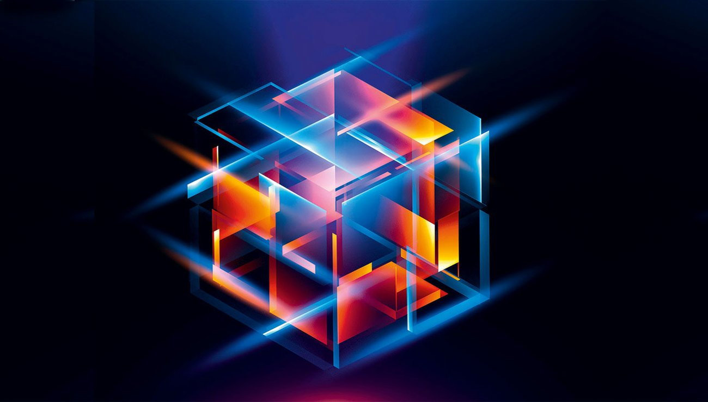

Applications de la Physique Quantique
La physique quantique, loin d'être un domaine théorique abstrait, a des applications concrètes et révolutionnaires dans de nombreux domaines de notre vie quotidienne.
Voici quelques exemples concrets :
- Lasers : La lumière amplifiée par émission stimulée de rayonnement, ou laser, repose sur l'émission stimulée de photons par des atomes excités. Cette technologie est utilisée dans une large variété d'applications, de la chirurgie au télécommunications en passant par la gravure et la lecture de CDs et DVDs.
- Transistors : Les transistors, éléments fondamentaux des ordinateurs, exploitent les propriétés des semi-conducteurs pour contrôler le flux d'électrons. L' miniaturisation des transistors et l'augmentation de la puissance de calcul sont en partie dues aux progrès de la physique quantique.
- Imagerie médicale : L'imagerie par résonance magnétique (IRM) et la tomographie par émission de positons (TEP) utilisent les propriétés magnétiques et radioactives des atomes pour obtenir des images détaillées de l'intérieur du corps humain.
- Cryptographie quantique : La physique quantique permet de développer des systèmes de cryptage ultra-sécurisés, basés sur les principes de la superposition et de l'enchevêtrement, qui sont impossibles à décrypter par les ordinateurs classiques.
- Ordinateurs quantiques : Encore en phase de développement, les ordinateurs quantiques ont le potentiel de révolutionner de nombreux domaines, de la recherche médicale à la chimie en passant par la finance. Ils exploitent les propriétés quantiques des particules pour effectuer des calculs impossibles pour les ordinateurs classiques.
- Métrologie : La physique quantique permet de développer des instruments de mesure ultra-précis, comme les horloges atomiques, qui sont utilisées pour le GPS et la synchronisation des réseaux de communication.
- Sciences des matériaux : La compréhension des propriétés quantiques des matériaux permet de développer de nouveaux matériaux aux propriétés inédites, comme les supraconducteurs, qui peuvent conduire l'électricité sans perte d'énergie.
- Technologies de l'information : La recherche en physique quantique explore de nouvelles technologies de communication et de stockage d'information, comme l'informatique quantique et la communication quantique.
- Énergie renouvelable : La recherche en physique quantique explore de nouvelles technologies de production d'énergie, comme les cellules solaires quantiques et les piles à combustible quantiques.
Ce ne sont là que quelques exemples des nombreuses applications de la physique quantique. Ce domaine en plein essor est à l'origine de progrès technologiques révolutionnaires qui transforment notre monde et ouvrent la voie à un avenir fascinant.
En conclusion, la physique quantique est un domaine de recherche fondamental et pluridisciplinaire qui a des applications concrètes et révolutionnaires dans de nombreux domaines de notre vie quotidienne. C'est une science en pleine expansion qui a le potentiel de transformer notre monde et de répondre à certains des défis les plus importants de l'humanité.